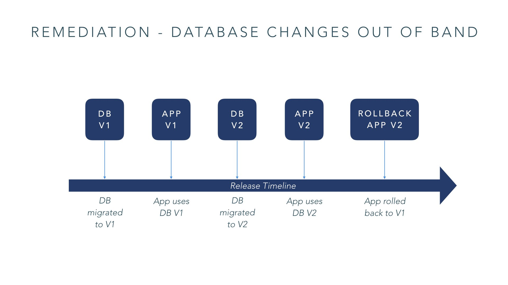

This is the final post in the series - Continuous Delivery of Microservices. In the previous post, we talked about configuration strategy for your CD pipeline. In this post, we’ll discuss remediation strategies when something goes wrong.
Introduction
In systems based on microservices architecture, you have multiple services getting updated frequently. How do you respond when a deployment of a service introduces instability or bugs? How do you ensure changes to an API are backwards compatible? We try to answer these questions in this post.
Roll forward and hotfix
Roll forward is an emergency fix strategy: you introduced an issue, you find the root cause of the failure, apply the fix as soon as possible and then move forward. If the fix is a small contained change that doesn’t compromise the entire environment, roll forward is recommended.

A prerequisite for roll forward is to ensure you have a comprehensive hotfix process already in place, so that you can bypass the CD pipeline to push changes from a hotfix branch directly to production. It is not uncommon to see a hotfix environment where these changes are deployed and tested before deploying to production.
Rollbacks and database refactoring
Rollback is another an emergency fix strategy when rolling forward is not an option due to maturity of the codebase, status of CD pipeline, or the team culture. In most cases, it’s easy to rollback if the change is granular and can be reasoned about. But if your deployment has changes to the database, especially to the database schema, you can't easily roll them back because transaction traffic could have been written into a new aspect of the schema. One common technique to deal with this is database refactoring.
A DB refactoring is a change made to the DB schema - the table structure or the data itself - while maintaining its informational semantics. A simple example: to rename a database table column, you take the following steps:
- add a new column with the new name
- populate the new column with data
- change the code to consume the new column
- delete the old column
Each of these steps can be in a different deployment. By doing this, the existing application code still writes to the older column, while newer code makes use of the new column. Once all instances of the old code are migrated over to using the new column, you can safely delete the old column.
Database refactoring allows you to be able to rollback more robustly. You can apply database changes out of band from code changes. When you have a database change used by both new code and old code, you can release the version of the database changes in isolation, and then follow it with a deployment of the app code that actually uses that database change. Keep repeating cycles of this and when you need to rollback for emergency fix, it will be straightforward because the V1 version of the code still works with the V2 of that database.

API backward compatibility
In microservices systems, you need to make changes to service APIs in a backward compatible manner. A change to the API should not break existing consumers of the API.
Ensure your API is backward compatible
For a single version strategy, ensure changes to an API are backwards compatible. That way careful consideration can be applied to major breaking changes.
One technique that is useful is to expose your API via GraphQL rather than REST to make backwards compatible changes to your APIs. GraphQL encourages backwards compatibility by allowing you to define the fields in the response in the query rather than letting the server define the format of the response.
Introducing service versioning
Versioning services adds significant complexity to the maintainability of a service. Multiple versions make a CD pipeline significantly more complex as multiple versions of a service need to be deployed and tested. We recommend as far as possible, start with a simple strategy of maintaining a single version of a service, along with Trunk Based Development. Maintaining multiple versions should be treated as a last resort and the operational complexities of managing multiple versions should be considered.
Summary
This is the last post of our CD of Microservices blog series. We hope you've enjoyed it. Please do leave a comment on the blog if you have any questions, we'd love to hear from you.